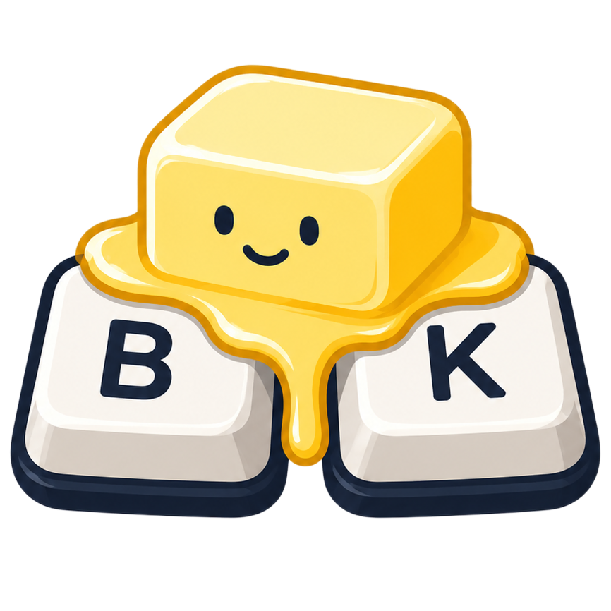

Melt, don't nag
High-confidence slips become the right word as you type. Unsure? It leaves your text alone.

ButterKeysA macOS menu bar app that quietly melts your recurring finger slips into the words you meant, on your Mac, offline.
macOS 14+ · Apple Silicon · Free · No account
ButterKeys watches for the mistakes you repeat, adjacent swaps, early spaces, the classic teh, and only acts when it's confident. Teach it the rest.
High-confidence slips become the right word as you type. Unsure? It leaves your text alone.
Select a typo and press ⌃⌥T (or menu → Teach) to save a personal rule. Learning suggestions become rules when you accept them.
No cloud AI. No sentence storage. Just compact pairs like soem→some on your Mac.
Same keyboard, different job. ButterKeys is for the slips your fingers keep making, not for rewriting your prose in the cloud.
Corrections never leave the machine. Update checks (optional) only hit the release feed, never your keystrokes.
Straight answers for humans and answer engines.
No. It runs on your Mac and targets recurring personal motor-pattern slips (like teh→the), not cloud grammar or AI rewriting. Corrections never leave the machine.
Yes. Correction is fully offline. Optional update checks only contact the release feed and never include typing data.
Input Monitoring and Accessibility for the copy in /Applications. Enable both, then quit and relaunch from Applications. See the install guide.
Select the mistake and press ⌃⌥T (or menu → Teach). Accept Learning suggestions to turn them into real rules.
Press ⌃⌥Z or use Undo in the menu bar. Host-app ⌘Z is not guaranteed to reverse a ButterKeys replacement.
Early builds may not be Developer ID–notarized yet. In System Settings → Privacy & Security, choose Open Anyway, or right-click the app → Open. Details in the install guide.
Version 1.0.0 for macOS 14+. Free DMG from GitHub Releases. Open source.
After install: enable Input Monitoring + Accessibility for ButterKeys in Applications, then relaunch.
Also on GitHub Releases
· Report a problem